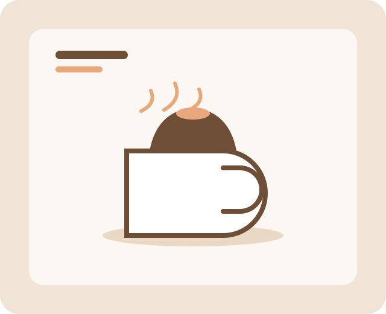

Senja Latte
Espresso ganda, susu oat, dan sedikit madu. Lembut, hangat, dan tidak terlalu manis.
Biji kopi lokal, roti panggang hangat, dan sudut duduk yang tenang. Tempat yang pas untuk kerja, ngobrol, atau sekadar diam sejenak.

Kami menyangrai dalam jumlah kecil setiap pagi supaya setiap cangkir terasa segar. Datang saja, meja dekat jendela biasanya kosong sebelum pukul empat.
Kunjungi Kami